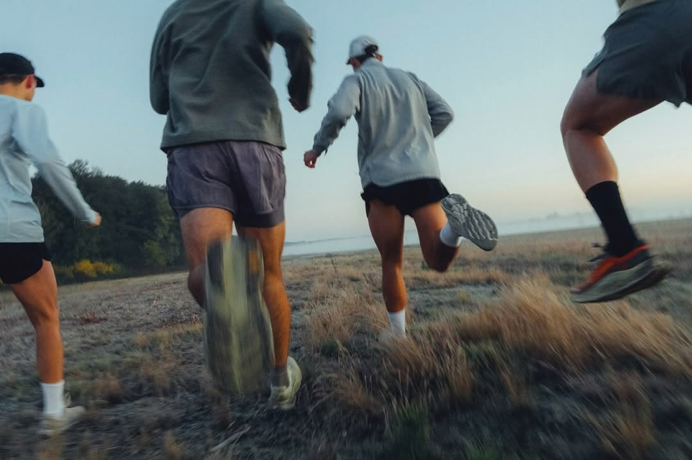

Tracing the Path.
We didn't start in a boardroom. We started on the trail, in the quiet hours before dawn when the only sound was the rhythm of footsteps against the earth. Trace was born from a simple promise: to design gear that doesn't just endure the elements, but connects you to them.